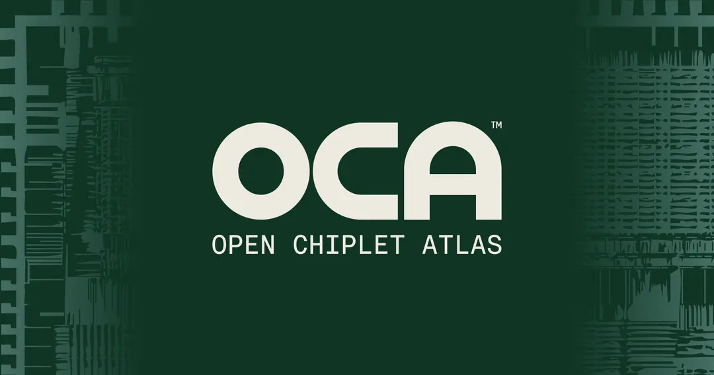

Open Chiplet Atlas Harness (OCAH)
The Open Chiplet Atlas Harness (OCAH) is an OCA-compliant, open-source chiplet framework: a reusable implementation vehicle for the Open Chiplet Architecture (OCA) standard. It packages the common, non-differentiating infrastructure every chiplet needs — security, boot, system management, debug, test, and die-to-die integration — so adopters can focus their effort on their own value-differentiating application logic.

| OCAH is the Harness pillar of the wider Open Chiplet Atlas (OCA) ecosystem, alongside the OCA Architecture specification and the OCA Compliance program. |
Learn more
-
Feature Overview — what OCAH provides today
-
Motivation — why OCAH exists
-
Use Cases — how adopters use OCAH in practice
-
License — OCAH’s open-source license
Explore the documentation
- Technical Reference Manual
-
Architecture and register-level detail for every OCAH subsystem
- Integrator Guide
-
Bringing OCAH into your own SoC
- Programmer’s Guide
-
Software and firmware interfaces
- Application Notes
-
Worked examples and integration patterns
- Contributing
-
How to get involved with the project